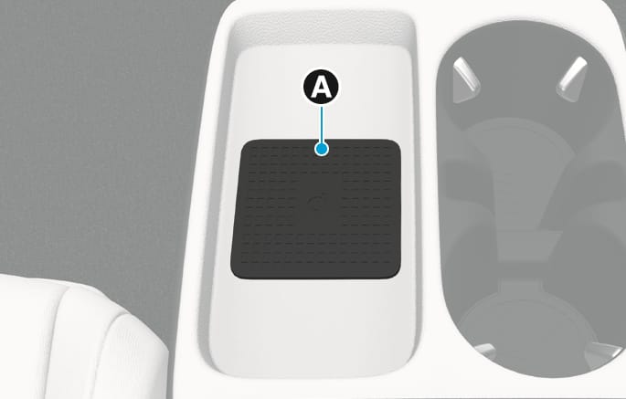

차량 시동 켜기
UWB 미지원 스마트폰, 카드 키

2C_WirelessChargingPad
스마트폰 또는 카드 키를 차량 내부의 인증 패드[A] 위에 올린 후 브레이크 페달을 밟고 시동 버튼을 눌러 시동을 거십시오.
-
시동을 건 후에는 디지털 키(스마트폰)를 실내 인증 패드(무선 충전 패드)에서 분리해도 됩니다.
-
시동 방법에 대한 자세한 설명은 '시동 및 주행'을 참고하십시오.
-
공유 사용자의 디지털 키를 처음 사용하는 경우 작동 시간이 지연될 수 있습니다. 도어 잠금 또는 잠금 해제가 작동할 때까지 도어 핸들의 인증 센서에 디지털 키를 태그하십시오.
-
실내 인증 패드에서 디지털 키를 처음 사용하는 경우 최초 1회 시동이 실패할 수 있습니다.
-
공유 사용자의 디지털 키는 해당 디지털 키로 처음 도어를 잠금 또는 잠금 해제하거나 시동을 건 이후 차량에 등록됩니다.
-
등록된 디지털 키를 인증 패드(무선 충전 패드) 위에 올려 두면 누구나 항상 차량의 시동을 걸 수 있으므로 주의하십시오.
-
등록된 디지털 키를 인증 패드(무선 충전 패드) 위에 올려 둔 상태로 차량의 작동법을 이해하지 못하는 동승자나 어린이를 혼자 차 안에 남겨 두면 예측하지 못한 사고가 발생할 수 있습니다.
UWB 지원 스마트폰
스마트폰을 차량 실내에 휴대한 상태에서 브레이크 페달을 밟고 시동 버튼을 누르십시오.